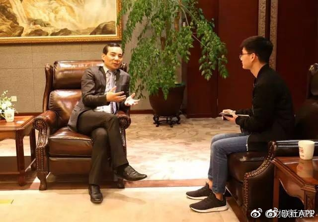

回复@且慢管家:截止今日所有披露年报的公司中：证金进入十大股东的有336家公司，汇金进入十大股东的有911家公司。不含各类券商、基金的救市资管产品。与上个季度相比，没有什么变化。但持仓个股有变动，个股持仓仓位也有增减。//@且慢管家:#投资达人说# 说到底 GJD到底都是些什么人呢@ETF拯救世界:3000（或者3100）到3300之间用ETF做网格应该是很靠谱的。GJD信誉保证。跟着GJD有肉吃。
回复@kuya55:我们不是抄底，不是这个思路。是根据概率计算仓位配置。现在计划仓位只有13个点，对于现在的概率来说太低了。要尽快加到合适的位置。//@kuya55:E大，因为买的是指数其实也就多跌一两个点，现在就加买是不是有点急了。 还是咱们这次150份的仓位还不够重呢@ETF拯救世界:很多人看到的是指数下跌和股票崩盘。sorry，我看到的是未来年化收益率一个点一个点往上蹦。金融投资风险很大，对眼前一片迷雾的人来说。
转发微博@财联社APP:4月26日，安邦保险集团董事长吴小晖在安邦保险总部同记者谈到安邦开启的2.0战略是养老和医疗。当天披露的2016年报显示，安邦人寿总资产规模升至1.45万亿，海外保险资产规模首次超过国内保险资产， 成为真正意义上具有全球竞争力的中国保险公司。（新京报） 